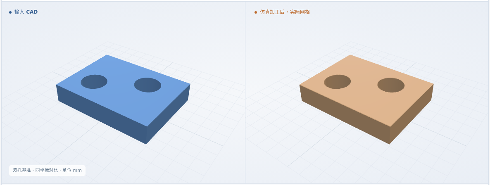
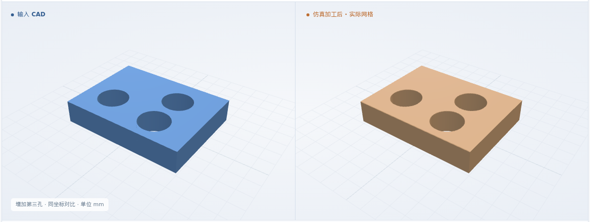
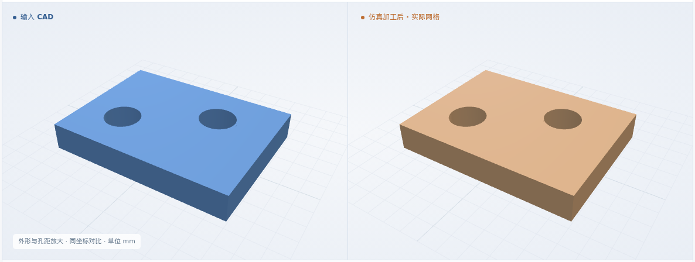
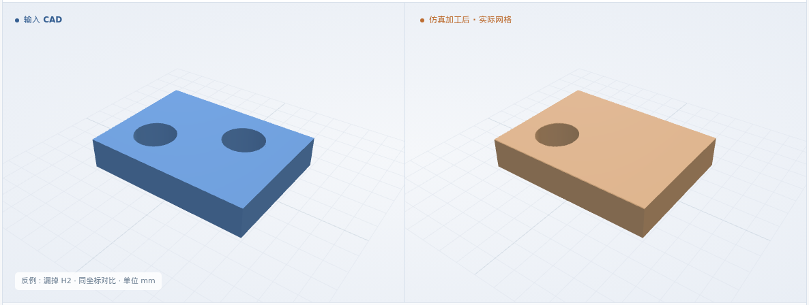
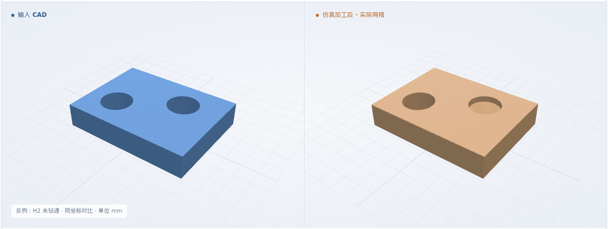

双孔基准
8 × 6 × 1.5 mm · H1 → H2
最终网格 0.025 mm
体积 IoU99.9724%

本次新增：多孔与工步绑定 · 保持工艺卡规定的孔序 · 逐孔定位漏孔、错位与未贯穿 · 显式网格精度与计算预算
体积 IoU = 原 CAD 与实际剩料的交集 / 并集
8 × 6 × 1.5 mm · H1 → H2
最终网格 0.025 mm

8 × 6 × 1.5 mm · H2 → H1
最终网格 0.025 mm
8 × 6 × 1.5 mm · H1 → H2 → H3
最终网格 0.025 mm

10 × 7.5 × 1.5 mm · H1 → H2
最终网格 0.03 mm

同一 XYZ / φ2 钻头 / 6061-T6 标签。放大例的网格精度为显式配置，计算预算保持不变。
毛坯 → 首孔钻削 → 后续孔加工 → 完成
三维回放暂不可用；上方实际图片和形状下载仍可查看。
H1 (2, 2) → H2 (5.5, 4)；其余正常用例复用该流程
逐孔绑定 CAD 与工步；核对顺序、依赖和资源。缺孔、重复或冲突则停止。
准备检查通过 ↗原生 CAD 复核每个孔；核对最终 NC 的孔序、孔位、深度、刀具和参数。
24 个执行代码块与方案一致 ↗核对同一 NC 与闭合剩料网格；比较整体 IoU，并逐孔测孔径、孔位和贯穿。
几何比对与测量 ↗逐孔检查孔径 ±0.1 mm、孔心偏差 ≤0.1 mm、9 条轴向探测线畅通。11 个截面，2 个网格步长作为数值保护带。
软件条件 ↗ · 完整结果 ↗制造验收依据仍待补齐；粗糙度、真实装夹和材料物理尚未验证。
正常入口均先拒绝错误 NC；专用反例执行后，H1 通过，H2 的漏孔、错位或未贯穿被检出。
H1 正常 · 仅 H2 有意设置错误
最终网格 0.025 mm

H1 正常 · 仅 H2 有意设置错误
最终网格 0.025 mm
H1 正常 · 仅 H2 有意设置错误
最终网格 0.025 mm

四例盲孔已有 IoU、CAD 对比与真实回放，并检查三个错误深度反例。